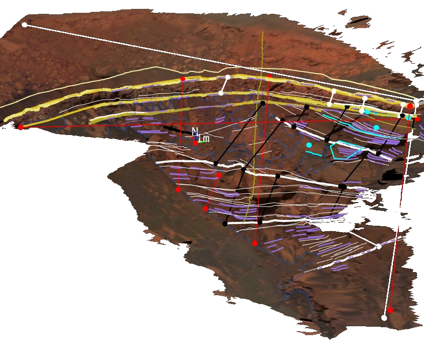
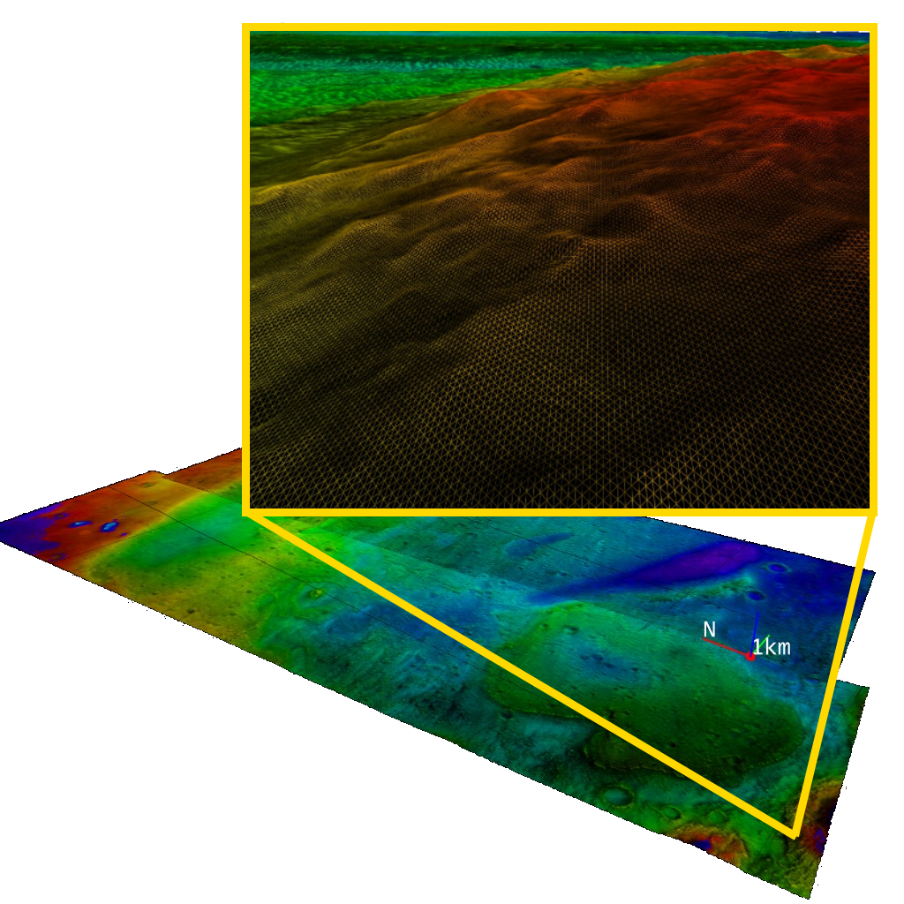
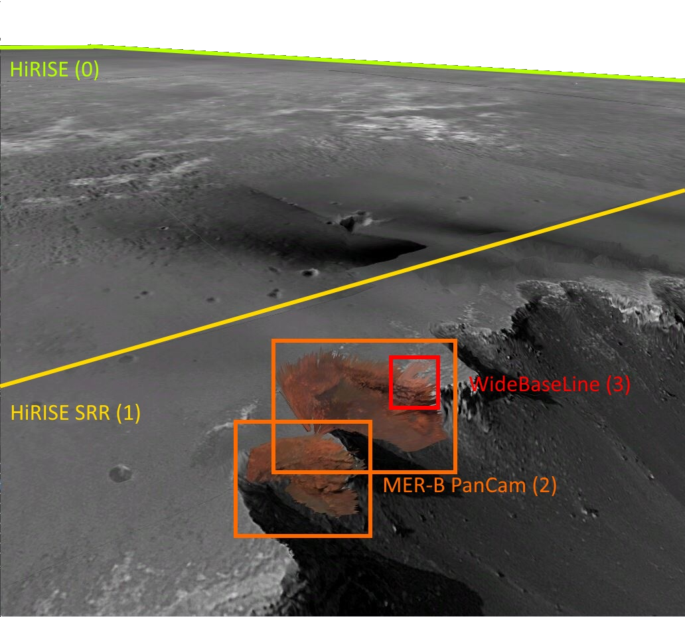

PRo3D, short for Planetary Robotics 3D Viewer, is an interactive 3D visualization tool to allow planetary scientists to work with high-resolution 3D reconstructions of the Martian surface.
Who uses PRo3D?
PRo3D aims to support planetary scientists in the course of NASA's and ESA's missions to find signs of life on the red planet by exploring high-resolution 3D surface reconstructions from obiter and rover cameras.
For the past 5 years the development of PRo3D has been geared towards providing planetary geologists with interactive tools to digitize geological features on digital outcrop models (DOMs) on the Martian surface. During our fruitful cooporation with geologists from the Imperial College of London, PRo3D has emerged as their main tool to conduct remote geological analysis which lead to many publications and talks at various geological science venues.
Planetary geology is the most elaborately supported use-case of PRo3D, however we strive to expand our user groups to other use-cases, so we have also developed features for supporting science goals in landing site selection and mission planning.
Features
Geological Annotation
PRo3D lets users pick points on the 3D surface at the full resolution of the data present. Our tools contain point, line, and polyline annotations, while line segments are projected onto the surface.
Various measurements are computed at the highest possible accuracy, such as the distance along a 3D surface (waylength) or dip-and-strike orientations of sediment structures.

Large Data
Surface reconstructions from high-resolution satellite images can easily yield gigabytes of data in terms of geometry, imagery, and additional layers. With PRo3D users can explore huge datasets interactively and even perform measurements of topographic features. The displayed dataset on the right consists of 2GB of raw 3D position vectors, a 1GB elevation map, and 10GB of image data rendered at interactive framerates with commodity hardware, utilizing adjustable level-of-detail and out-of-core techniques.

3D Layers
Although, PRo3D is not a GIS system, we need to to provide our users with typical GIS features to solve their geospatial problems, such as evaluating topographic or geological features. Our 3D layering techique allows a seemless integration of different reconstructions present at a single location. Unlike image or DTM layering we allow users to blend full 3D data by assigning rendering priorities, which is crucial to explore reconstructions from multiple rover camera instruments.

Data
Geological Annotation
PRo3D lets users pick points on the 3D surface at the full resolution of the data present. Our tools contain point, line, and polyline annotations, while line segments are projected onto the surface. Various measurements are computed at the highest possible accuracy, such as the distance along a 3D surface (waylength) or dip-and-strike orientations of sediment structures.
Large Data
Surface reconstructions from high-resolution satellite images can easily yield gigabytes of data in terms of geometry, imagery, and additional layers. With PRo3D users can explore huge datasets interactively and even perform measurements of topographic features. The displayed dataset on the right consists of 2GB of raw 3D position vectors, a 1GB elevation map, and 10GB of image data rendered at interactive framerates with commodity hardware, utilizing adjustable level-of-detail and out-of-core techniques.
3D Layers
Although, PRo3D is not a GIS system, we need to to provide our users with typical GIS features to solve their geospatial problems, such as evaluating topographic or geological features. Our 3D layering techique allows a seemless integration of different reconstructions present at a single location. Unlike image or DTM layering we allow users to blend full 3D data by assigning rendering priorities, which is crucial to explore reconstructions from multiple rover camera instruments.Currently, PRo3D only supports reconstructions in the proprietary data format OPC (Ordered Point Clouds), basically consisting of hierarchically organized surface patches. These reconstructions stem from orbiter images and rover images and are produced by Joanneum Research by using the PRoViP processing pipeline. Many surface reconstructions have been generated from, for instance: HiRISE, MER-A, MER-B and MSL missions from various instruments. An ongoing project evaluates terrestrial applicability of PRo3D and the PRoViP pipeline by capturing outcrops in the UK.
Availability
PRo3D, PRoViP, and the surface reconstructions (OPCs) are currently not publicly available. For scientific, academic, or commercial inquiries please contact gerhard.paar[at]joanneum.at.